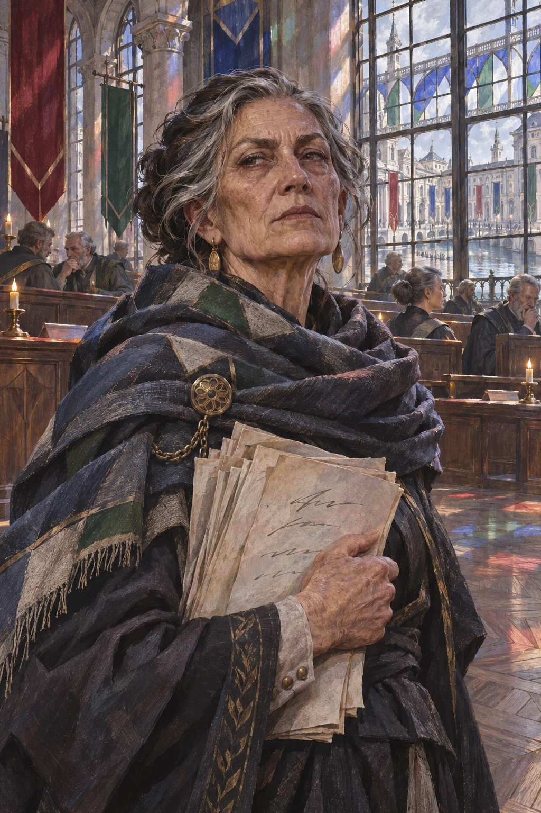
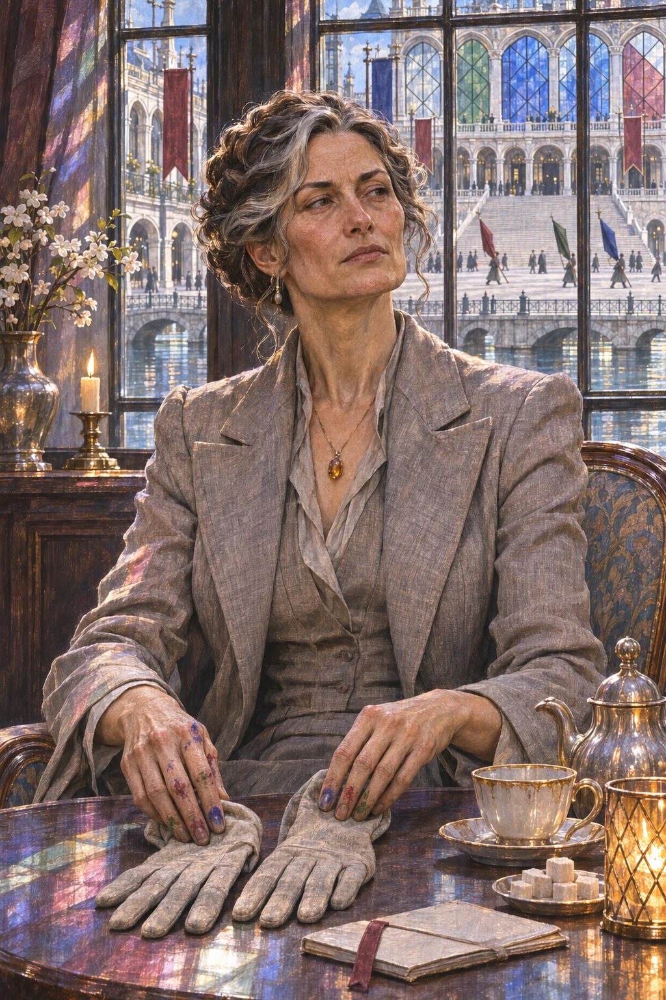

Решить, понесёт ли Богдан знамёна через Нижние двери, кто ночью останется в Зале знамён, выйдет ли резерв и что Кассия знает о вас.
Богдан Ольшев

Юла НерСеверина ЛинтЭнна Рей

Кассия Аммер
Полки впервые проходят площадь целиком, от Знамённого двора до лестницы Палаты; сапоги бьют в такт, и стёкла Галереи дрожат в рамах. Горожане стоят вдоль домов в три ряда, торговки с лотками продают леденцы в форме знамён, кто-то влез на фонарный столб, чтобы лучше видеть. На балконе Палаты знамёна поднимают к перилам и опускают, поднимают и опускают — репетиция приёма, — и каждый раз толпа по привычке хлопает. На Галерее горят все стёкла сразу: красное, молочное, прозрачное, зелёное, медное, синее; старики говорят, что такого не бывало с прошлого Возвращения. У Нижних дверей Палаты стоят люди в парадных плащах почётной стражи и вежливо не пускают зевак во двор. Пахнет пылью, конским потом и свежей краской на перилах. До ночи знамён остаётся один день, и ваш обход идёт последним кругом.
Подготовка и роли
Последний круг фракций: каждая сцена — один дом, сдвиг другого — эхом в конце сцены; каждое изменение влияния — числом и причиной вслух и карандашом на схеме фракций. Отказ Богдана: сегодня — Армия −2; если нет, в 22:00 ночи знамён возможен поздний отказ (−1); в обоих случаях в 23:00 знамёна через Нижние двери не идут. Юла уходит из Палаты только по просьбе отряда: депутатов в списке Зала −1. Стекло, взятое Кассией, возвращается дому, только если его лидер увидел поля со строкой о нём (Нить −1). Первый показ янтарных полей кому-либо — Нить −2; лидер, впервые увидевший их, +1 своему дому. Ложь, которую Кассия называет в сцене 4 (притворное согласие в вечер 5, ложь сержанту в вечер 6), — Нить +1 за каждую; обещание, данное при Матиасе, засчитывается +1 сразу. Отставка Северины — не тайна дома: её показ чисел не двигает. Хода города в этот вечер нет. В конце вечера запишите в «Лист ведущего» четыре факта: Богдан отказался — да/нет; Орен предупреждён — да/нет; депутатов в списке Зала = 4 − вычеркнутые Ореном − 1, если Юла ушла (не меньше 1); имена причалов в списке — да, если медное стекло у Кассии или имена отданы ей. Раздатка «Карта ночи знамён» — версия Кассии: часа 04:00 в ней нет. Ориентир: А 6 6 3 4 4 0 (ПА, РЕ, ПР у Кассии); Б 2 2 6 6 6 5; В 6 4 3 6 5 1 (все стёкла у отряда, Богдан не отказал).
Надир Ро — полевая бирка роты Богдана: отказ капитана без броска сегодня или в 22:00 ночи знамён.
Таисия Ланге — бляха караула Палаты: просит Юлу уйти словами караульной, без броска.
Ефрем Вайда — знак обета: резерв помнит своего лекаря, разговор с Энной без броска.
Тера Квин и Зарина Мойл — Тера сверяет карту ночи с янтарными полями; Зарина ведёт семьи депутатов к людям Иветты.
Матиас Оберт (если за столом) — свидетель сделки о прозрачном или зелёном стекле: обещание, данное при нём, засчитывается +1 сразу.
Ора Милл (если за столом) — на репетиции видит, кто зажигает рамы Галереи и как заперт балкон: в ночь её пара на Галерее даёт +3.
Сцена 1 · 40 минут
Читай приказ до конца (Армия)
На Знамённом дворе, за спиной у праздничной толпы, работа не кончается: колонна Богдана Ольшева уже в третий раз проходит от помоста к воротам и обратно, древки на плечах, шаг в шаг. Песок взрыт до самого камня. Адъютант генерала стоит у помоста с маршрутом в руках и сверяет по нему каждый поворот. С крыш доносятся хлопки площади: на балконе снова подняли знамёна. Капитан замечает вас на полуобороте, вскидывает руку, и колонна встаёт так резко, что последний ряд едва не налетает на передний. «Обходная! — его хриплый голос перекрывает барабан. — Ко мне, раз пришли».
Знамённый двор, помост репетиций. Знаменосцы Богдана Ольшева в третий раз проходят от помоста к воротам; над крышами виден балкон Палаты, где поднимают знамёна. Адъютант Орена держит маршрут: площадь — Нижние двери — двор Палаты в 23:00. Богдан узнаёт Надира: «Пристав! Знамёна несут, а не отдают. Ты сам нас так учил». Если отряд кладёт перед ним лист третий со списком Зала рядом с его припиской «при добровольной отставке канцлера», он читает до конца и долго держит палец на строке «вывод по приложению в подвал». «Канцлер уходит сама. Я несу ей знамёна, а не подвал». Отказ звучит коротко: «Мои люди внесут знамёна. Через Парадные. Днём». Ведущий вслух: «Армия −2 — отказ Богдана» — и пишет число карандашом на схеме фракций. Попросить нести как задумано — Богдан кивает с облегчением, числа не меняются. Промолчать — тоже ответ: завтра он ведёт колонну к Нижним дверям.
Выборы — и что будет дальше
Показать Богдану список Зала рядом с его условием.
Богдану кладут лист третий со списком Зала рядом с его припиской «при добровольной отставке канцлера». Он читает до конца и долго держит палец на строке «вывод по приложению в подвал». «Канцлер уходит сама. Я несу ей знамёна, а не подвал». Отказ звучит коротко: «Мои люди внесут знамёна. Через Парадные. Днём». Армия на схеме теряет вдвое.
Промолчать и дать колонне репетировать.
Колонне дают репетировать молча. Знаменосцы в третий раз проходят от помоста к воротам. Богдан узнаёт бывшего пристава своей роты: «Пристав! Знамёна несут, а не отдают. Ты сам нас так учил». Чисел нет. Молчание — тоже ответ: завтра капитан поведёт колонну к Нижним дверям, как написано в маршруте.
Просить нести знамёна как задумано, через Нижние двери.
Богдана просят нести знамёна как задумано, через Нижние двери. Капитан кивает с облегчением: «Вот и хорошо. Не люблю, когда маршрут меняют в последний день». Числа не меняются. Колонна уходит на последний круг. Знамёна в 23:00 пойдут через Нижние двери, и офицеры штаба пойдут вместе с ними.
Проверка и путь без броска
Убеждение Сл 14 — Богдан отказывается сегодня. Без броска — Надир с полевой биркой роты («Ты знаешь мою руку, капитан. Читай со мной») или прежняя услуга знаменосцам (раненому в вечер 1, с подъёмом колонны в вечер 3): тогда он отказывается, едва увидев список рядом со своим условием.
Если не получилось
«Спросите меня в ночь». Богдан ведёт колонну, но строку помнит: в 22:00 ночи знамён пара на Знамённом дворе может добиться позднего отказа (Армия −1, знамёна через Нижние двери не идут).
Сцена 2 · 40 минут
Кто останется в Зале (Палата)
В Зале знамён распахнуты окна, и сквозняк шевелит под потолком знамёна прежних Возвращений, выцветшие до цвета некрепкого чая. Служители в серых сюртуках расставляют скамьи вдоль северной и южной стен, двое других моют стеклянные двери балкона, и паркет, натёртый к празднику, отражает их вверх ногами. Юла Нер идёт вдоль скамей с пачкой повесток и кладёт по одной на каждое место, называя депутатов вполголоса по фамилиям. У некоторых мест она задерживается дольше. Потом выпрямляется, постукивает пачкой по ладони и говорит, не глядя на вас: «Вы ведь не уговаривать меня пришли».
Палата, Зал знамён. Служители расставляют скамьи вдоль северной и южной стен и моют стеклянные двери балкона. Юла Нер кладёт повестки по местам депутатов — и на три места, что стоят в листе рядом с её именем. «Я никуда не ухожу. Я здесь работаю». Уйти на ночь она может только по просьбе отряда: тогда в списке Зала одним депутатом меньше, а Юла ночью на площади. Если «Третья дверь» на 3 и выше, проводник Иветты принимает семьи депутатов из списка, и отряд отводит их к баням: «Палата +1 — услуга». Служитель Северины приносит Юле копию отставки с датой ночи; Юла читает и поднимает глаза: «Вы же знаете, что читаете на рассвете? Обычно — имя канцлера. Обычно». Прозрачное стекло у Юлы — по сделке: «Обещайте: ни одного депутата не уведут из Зала по чужому листу. Тогда стекло ваше». Стекло у Кассии, а поля со своим именем Юла не видела — покажите их: стекло возвращается к ней, «Нить −1», «Палата +1»; если поля показаны впервые — ещё «Нить −2».
Выборы — и что будет дальше
Просить Юлу уйти из Палаты на ночь.
Юлу просят уйти из Палаты на ночь — по просьбе обходной группы, как велит обычай. Она долго смотрит на балкон: «Я никуда не ухожу. Я здесь работаю». Потом складывает повестки: «Но если просит обходная — уйду. На площадь. Ненадолго». В списке Зала на одного депутата меньше. Ночью Юла будет на площади, а не в Зале.
Вывести семьи депутатов из списка с людьми Иветты (если «Третья дверь» на 3 и выше).
Проводник Иветты принимает семьи депутатов из списка, и группа отводит их к Синим баням переулками, где не горят фонари. Дети спят на руках, старики несут узлы. Палата на схеме прибавляет вес: услуга. Юла, узнав, кивает: «Спасибо. Теперь, если за ними придут, дома никого не будет».
Сделка о прозрачном стекле — или показать Юле поля с её именем.
С Юлой заключают сделку: ни одного депутата не уведут из Зала по чужому листу — и прозрачное стекло её. Или показывают поля с её именем, если стекло у Кассии: «Оставить. Как пальто на вешалке». Тогда стекло возвращается к Юле, Нить теряет вес, Палата прибавляет. Юла раскладывает повестки по местам: «Пусть приходят. Я здесь работаю».
Проверка и путь без броска
Убеждение Сл 15 — Юла уходит из Палаты на ночь. Без броска — Таисия с бляхой караула: «Караул выводит, а не уходит». Сделка о стекле, показ полей и вывод семей — без броска.
Если не получилось
Юла остаётся: «Меня в списке? Хорошо. Пусть приходят в Зал. Я там буду». В 03:00 ночи она на скамье в Зале знамён, а копия отставки уже у неё в руках.
Сцена 3 · 40 минут
Покажите открытую дверь (Резерв)
Во Дворе резерва натягивают тетивы: арбалеты стоят в козлах рядами, добровольцы упираются ногой в стремя и тянут, кряхтя, а Энна идёт вдоль рядов и проверяет каждую тетиву щелчком пальца. Звук в ответ короткий и злой, как у струны. У ворот пустует бочка, на которой в первые дни недели сидел вербовщик генерала; теперь в ней мокнут тряпки для чистки. Над ней, под зелёным фонарём, дежурства на ночь знамён уже вписаны мелом, все до одного. Энна доходит до последних козел, оборачивается к вам и раскрывает ладонь, будто собирается что-то показать.
Резервный двор. Сорок арбалетов стоят в козлах, добровольцы натягивают тетивы к караулу праздника, у ворот пустует бочка, где сидел вербовщик генерала. Энна Рей держит на ладони круглое зелёное стекло — или ладонь пуста, если стекло у Кассии. «Я спрашиваю один раз: против кого?» Если стекло у неё, она отдаёт его отряду за обещание открытых Парадных дверей: «Стекло — не подпись. Это значит: я за вас отвечаю». Ведущий: «Резерв +1 — сделка с Энной», стекло переходит к отряду. Если стекло у Кассии и Энна полей не видела, она отвечает ровно: «Стекло у правительства. Резерв выйдет в четыре, как просили». Показать ей строку полей «резерв (зелёное стекло — от обходной группы)» — ложь Кассии раскрыта: стекло возвращается к Энне, «Нить −1», «Резерв +1»; если поля показаны впервые — ещё «Нить −2». Она смотрит за крыши, на лестницу Палаты: «Покажите мне открытую дверь — выйду».
Выборы — и что будет дальше
Просить зелёное стекло за обещание открытых Парадных дверей.
Энна держит на ладони зелёное стекло. Ей обещают открытые Парадные двери, и она отдаёт стекло: «Стекло — не подпись. Это значит: я за вас отвечаю». Резерв на схеме прибавляет вес: сделка. Сорок арбалетов стоят в козлах. Энна смотрит за крыши, на лестницу Палаты: «Покажите мне открытую дверь — выйду».
Показать Энне строку полей о зелёном стекле.
Энне показывают строку полей: «резерв (зелёное стекло — от обходной группы)». Ложь Кассии раскрыта: стекло возвращается к Энне, Нить теряет вес, резерв прибавляет. Если поля показывают впервые, Нить теряет вдвое. Энна сжимает стекло в кулаке: «Против кого? Теперь я знаю. И теперь я выбираю сама».
Пообещать открытую дверь и оставить стекло Энне.
Энне обещают открытую дверь, но стекло оставляют ей. Она кивает: «Стекло у меня. Слово у вас. Посмотрим, что крепче». Резерв не прибавляет веса сделкой, но и не уходит из рук. В ночь знамён Энна выйдет к той двери, которая окажется открытой, если такая найдётся, и решит сама.
Проверка и путь без броска
Убеждение Сл 13 — Энна отдаёт стекло отряду. Без броска — Ефрем: добровольцы знают лекаря, который их лечил, и Энна верит тому, за кого ручаются её люди. Показ полей — без броска.
Если не получилось
«В ночь смотрите на Парадные». Стекло остаётся у Энны: резерв выйдет по своему числу (на 5–6 — к Парадным дверям, и стреляет).
Сцена 4 · 40 минут
Карта ночи (Нить)
Площадь за двойными окнами гаснет по частям: сперва огни помоста, потом фонари вдоль лестницы Палаты, и в чайной становится видно собственное отражение в стекле. Последние посетители «Двух стёкол» расплачиваются у стойки, не называя имён, и уходят под зонтами. Янтарный кулон Кассии лежит на блюдце, как вишнёвая косточка. Перед ней большой лист, расчерченный по часам, и она заполняет его не торопясь, сверяясь с чем-то в памяти, а не на бумаге. Когда вы подходите, она поворачивает лист к вам и придерживает его угол пальцем, испачканным зелёными чернилами.
«Два стекла», поздний вечер. Двойные окна чайной запотели; за ними на площади гасят огни репетиции. Кассия Аммер пишет тремя чернилами, янтарный кулон лежит на блюдце. Она пододвигает лист — карту ночи. «В два — у Галереи, в три — в Зале знамён, в пять — на балконе». Потом, не повышая голоса, называет то, о чём молчала: притворное согласие в вечер 5 и ложь сержанту у Тихого сада в вечер 6, если они были. Ведущий за каждую: «Нить +1 — ложь отряда раскрыта». Если отряд в вечер 5 принял её предложение, она дописывает на карте «03:00 — не мешать». Если нет — кладёт перо: «Не будете в три в Зале — ваши имена будут в моём списке». Про четыре часа отвечает одно: «Ваш час — пять. Остальное забудьте. Забыть — это навык». Тера может положить карту рядом с янтарными полями: на карте строки 04:00 нет.
Выборы — и что будет дальше
Взять карту ночи.
Карту ночи берут. Кассия пододвигает лист: «В два — у Галереи, в три — в Зале знамён, в пять — на балконе». Если в пятый вечер группа приняла её предложение, на карте её рукой стоит «03:00 — не мешать». Если нет — угроза списком. Толкователь группы кладёт карту рядом с янтарными полями: строки 04:00 на карте нет.
Спросить Кассию, что будет в четыре часа.
Кассию спрашивают, что будет в четыре часа. Она отвечает одно: «Ваш час — пять. Остальное забудьте. Забыть — это навык». Больше ничего. Янтарный кулон лежит на блюдце, чай остыл. Лжи группы, если они были, Кассия называет вслух по одной. Четыре часа она не называет: на её карте этого часа нет.
Промолчать о янтарных полях и уйти.
О янтарных полях молчат и уходят. Кассия не знает, что группа читала её руку, — или делает вид, что не знает: «До завтра. Не опаздывайте к Галерее». Она провожает группу взглядом через запотевшее окно. Чисел нет. Завтра ночь знамён, а у группы в папке лежит то, о чём куратор просила забыть ещё в первый вечер.
Проверка и путь без броска
Проницательность Сл 13 — в карте нет часа 04:00, хотя в полях он есть. Без броска — Тера кладёт карту рядом с полями (или с копией из журнала Фабиана) и видит пропуск сама.
Если не получилось
Если отряд ушёл без карты или не пришёл к Кассии, её курьер приносит карту в начале вечера 8 — ту же, без 04:00.
Условие капитана
Маршрут знамён, приколотый к помосту репетиций четырьмя гвоздиками: площадь — Нижние двери — двор Палаты, 23:00. Лист затёрт пальцами знаменосцев, края в мелу, а внизу — приписка карандашом капитанской рукой, крупная и с сильным нажимом.
Что можно установить
Капитан знаменосцев Богдан Ольшев ведёт знамёна в 23:00 через Нижние двери во двор Палаты «при добровольной отставке канцлера» — это его условие, приписанное к маршруту. С колонной пойдут «офицеры штаба»; ему сказали — «почётный эскорт». О списке, подвале и закрытии Палаты ему не говорили.
Получение
Сц. 3.2: спросить Богдана о маршруте. С Надиром и полевой биркой он показывает приписку сам; Убеждение Сл 12 только ускоряет разговор.
Запасной путь
Знаменосец, не дождавшись капитана, повторяет маршрут и объяснение вслух. Или сц. 7.1: Богдан сам читает свою приписку, когда ему кладут рядом список Зала.
Отставка с датой ночи
Малая ротонда Палаты, круглая, с высоким окном на площадь: цепь канцлера лежит на столе рядом с речью к празднику, исчёрканной на полях, и очками на шнурке. В журнале подписей за неделю одни поздравления с Возвращением.
Что можно установить
Две недели назад канцлер Северина Линт подписала отставку с полуночи ночи Возвращения знамён «по причине усталости» и отдала её генералу Орену Вальту — копия у него лично — за молчание о своих военных подписях под выселениями. Отставку объявят в 00:00 при любом исходе; Северина её не отзовёт и на балкон не выйдет. О списке, подвале и дверной команде она не знает.
Получение
Сц. 5.3: показать Северине строку листа третьего «00:00 — отставка»; она подтверждает и отдаёт свою копию («Отставка канцлера»). Без броска; Убеждение Сл 14 нужно, только чтобы она назвала, что подписывала в войну.
Запасной путь
Юла: «Северина неделю не подписывает ничего, кроме поздравлений». В сц. 7.2 служитель Северины приносит Юле копию отставки при отряде; в 00:00 ночи знамён отставку объявляют всем.
Изменения после решений
Если Богдан отказался сегодня → Армия −2. В 23:00 ночи офицеры идут без знамён и входят во двор Палаты, только если Рассвет выиграл Нижние двери или там никого нет; действия «Богдан» в 22:00 нет.
Если Юла ушла из Палаты на ночь → В списке Зала на одного депутата меньше (не меньше одного). Ночью Юла на площади, и если Палату держит Город, за спиной отряда на балконе — она.
Если Карта ночи у отряда → На ней нет 04:00. Если отряд принял предложение Кассии в вечер 5, на карте её рукой «03:00 — не мешать»; иначе — угроза списком.
Выдать в нужный момент
Карта ночи знамён — Вечер 7, сцена 4: Кассия отдаёт «расписание ночи» — её версия, без часа 04:00. Если отряд принял её предложение в вечер 5, она дописывает карандашом «03:00 — не мешать». Если стол не пришёл к Кассии — её курьер приносит карту в начале вечера 8. Часы ночи ведущий ведёт по листу ночи (ведущему).
Отставка канцлера — Вечер 5, сцена 3: Северина отдаёт свою копию, увидев строку «00:00 — отставка». Иначе вечер 7, сцена 2: служитель Северины приносит копию Юле при отряде.
Завершение вечера
Знамёна последний раз поднимают на балкон Палаты и уносят во двор; древки стучат о камень, полотнища складывают бережно, как бельё после праздника. Из окна Малой ротонды на них смотрит Северина Линт, не снимая цепи канцлера. Галерея гасит стёкла одно за другим, последним — красное. Спросите стол, где каждая пара героев хочет встретить 22:00 и чьё стекло она понесёт, и пусть каждый игрок скажет, что его герой сделает, если на рассвете лист окажется у него в руках. Эпилогов после ночи не будет — прощальные слова говорят сейчас.